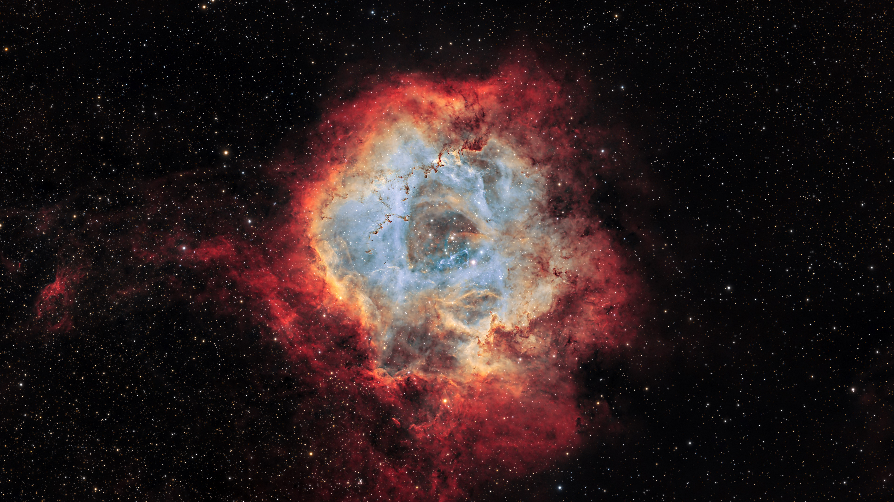

From Particles,
The Universe Was Born
Every planet you see on this screen is composed of thousands of tiny light points — just like the actual universe, which was born from dust and particles that gradually came together.
Particles Forming the World
The planet behind you is not a solid ball — it is rendered from thousands of individual particle points scattered across its surface, each twinkling and moving slowly following the planet's rotation. From a distance, this collection of points merges into a complete shape, just like how primordial cosmic dust gradually came together to form the planets we know today.
.jpg)

Planet, Rings, and Its Satellites
In the middle of this small solar system, the main planet is surrounded by a ring of particles that extends along its equatorial plane, similar to Saturn's rings. A small moon orbits in a circular path, continuously moving without stopping — a simple simulation of the gravitational force that keeps every celestial body on its course.
Other Objects in the Universe
The universe is not just about one planet. Here are some other celestial objects that fill the vastness of space.

Nebula
A giant cloud of gas and dust in space. Some nebulae are the birthplaces of new stars, while others are the remnants of dead stars.

Comet
A chunk of ice and dust that travels around the sun in a very elongated orbit, leaving a glowing tail behind as it approaches the sun's heat.

Asteroid Belt
A collection of small rocky bodies orbiting between two planets, remnants of material that failed to form a planet.

Spiral Galaxy
A collection of billions of stars, gas, and dust that form a giant spiral pattern, slowly rotating around their massive center for millions of years.